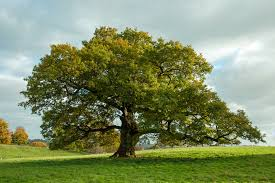
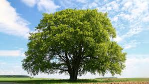

Biodiversity refers to the wide range of living organisms on Earth, including plants, animals, fungi, and microorganisms.
It exists at every level, from genes to entire ecosystems.
Biodiversity helps maintain the balance of nature and is essential for the survival of all life forms, including humans.
Biodiversity include varity of every plant and animal specis

Biodiversity is essential for maintaining the health of our planet and all living organisms.
It provides us with countless resources, from food and clean water to medicine and materials.
Healthy ecosystems, supported by diverse species, regulate the environment, purify the air, and control pests and diseases.
Biodiversity also helps maintain the balance of natural processes, such as pollination and nutrient cycling, which are vital for crop growth and the overall functioning of ecosystems.
Additionally, it plays a crucial role in climate regulation,
as diverse forests, oceans, and wetlands absorb carbon dioxide and help mitigate climate change.
Protecting biodiversity is not just about saving species;
it's about preserving the very systems that sustain life on Earth, including human life.
Or you can visit the offical video.
click offical video below.
A habitat is the natural environment where a plant, animal, or other organism lives and grows.
It provides all the basic needs for survival, including food, water, shelter, and space.
Different organisms live in different types of habitats depending on their needs—forests, oceans, deserts, wetlands, and grasslands are all examples.
Each habitat supports a unique community of species that are specially adapted to live there.
For example, camels are suited for desert habitats, while frogs thrive in wetlands.
The loss or destruction of habitats due to human activities like deforestation, pollution, and urbanization is one of the biggest threats to biodiversity.
Protecting habitats is essential for the survival of countless species and the health of the planet.
Many animals and plant are adapted to different habitat.
There are multiple types of Habitat.
Let us study them.
A desert habitat is a dry and often hot environment where very little rainfall occurs throughout the year.
Despite the harsh conditions, deserts are home to many specially adapted plants and animals.
Cacti, for example, have thick stems to store water and spines instead of leaves to reduce water loss.
Animals like camels, lizards, snakes, and foxes survive in deserts by being active mostly at night, staying cool during the day, and needing very little water.
The temperature in deserts can be extremely high during the day and drop sharply at night.
Although deserts may look empty, they are full of life that has adapted in amazing ways to survive in such a tough environment.Protecting desert ecosystems is important because they are fragile and take a long time to recover if damaged.

Grasslands are large, open areas covered mainly with grasses and a few scattered trees or shrubs.
They are found in many parts of the world, including the prairies of North America, the savannas of Africa, and the steppes of Asia.
Grasslands receive moderate rainfall—more than deserts but less than forests—which supports the growth of grasses but not dense forests.
These habitats are home to a wide variety of animals, such as zebras, antelopes, bison, elephants, lions, cheetahs, and many birds and insects.
The animals living in grasslands are often fast runners or grazers that feed on the abundant grasses.
Fire and grazing animals help maintain the balance of this ecosystem by preventing the overgrowth of shrubs and trees.
Grasslands are important for agriculture and provide rich soil, but they are also at risk from human activities like farming and urban development.
Protecting grasslands is important for preserving the wildlife and natural balance of these unique ecosystems.
Tundra and polar habitats are some of the coldest places on Earth, found near the North and South Poles.
These regions are known for their freezing temperatures, strong winds, and very little rainfall.
The tundra is a flat, treeless area where the ground is frozen most of the year, known as permafrost.
During the short summer, some small plants like mosses, lichens, and grasses grow and provide food for animals.
Animals such as arctic foxes, reindeer, snowy owls, and polar bears have special adaptations like thick fur and fat layers to survive the cold.
In the polar regions, especially Antarctica, the environment is even harsher and supports fewer land animals, but the surrounding oceans are rich in life like seals, whales, and penguins.
Despite the extreme conditions, tundra and polar habitats are important for global climate regulation and support unique forms of life.
However, they are also very sensitive to climate change, which is causing ice to melt and threatening the species that live there.

Mountain habitats are found at high elevations, where the climate is cooler and the air is thinner compared to lowland areas.
These habitats often have steep slopes, rocky terrain, and a variety of climates depending on the altitude.
As you go higher up a mountain, the temperature drops and the types of plants and animals change.
Lower slopes may have forests, while higher areas are covered with grasslands, shrubs, or even snow and ice.
Animals like mountain goats, snow leopards, yaks, and eagles are well adapted to the cold and rough landscape.
Many mountain plants have special features like deep roots or small leaves to survive the windy and chilly conditions.
Mountain regions are also the source of many rivers and provide fresh water to millions of people.
However, mountain ecosystems are fragile and face threats from climate change, deforestation, and tourism.
Rainforests are dense, green forests found in regions that receive a lot of rainfall throughout the year.
They are usually located near the equator and have a warm, humid climate that supports an incredible variety of life.
Rainforests are home to more than half of the world’s plant and animal species, including monkeys, jaguars, toucans, frogs, and countless insects.
The trees in a rainforest grow very tall and form layers, including the emergent, canopy, understory, and forest floor, each with its own unique wildlife.
Many rainforest plants are also used to make medicines, food, and other useful products.
Rainforests play a vital role in maintaining Earth’s climate by producing oxygen and absorbing carbon dioxide.
Unfortunately, these forests are being destroyed rapidly due to logging, farming, and mining, which threatens the balance of nature.
Protecting rainforests is important not only for the animals and plants that live there but also for the health of our entire planet.
To survive in these habitat many animals have different adaptation.
for each habitat animals have different adaptation like animals is desert have different adaptation than rainforest.
let us study about them.
Animals that live in the desert have special adaptations to survive the extreme heat and dry conditions.
Since water is very scarce, many desert animals can go for long periods without drinking and get moisture from the food they eat.
Camels are well-known desert animals that store fat in their humps, which can be used for energy and water when food is not available.
Many desert animals, like foxes and snakes, are nocturnal, meaning they stay active at night when it is cooler.
Some animals, such as the fennec fox, have large ears that help release heat and keep their bodies cool.
Lizards and insects often have light-colored bodies to reflect sunlight and avoid overheating.
Burrowing is another common behavior; animals like rodents dig tunnels to escape the heat and find shelter underground.
These adaptations are important for survival in the harsh desert environment, where temperatures can change quickly and food is limited.
Animals in grasslands have developed unique adaptations to survive in open spaces with few trees and seasonal changes.
Many herbivores, like zebras, antelopes, and bison, have strong legs and hooves that help them run fast across the plains to escape predators.
These animals usually move in groups, or herds, which gives them protection and helps in finding food.
Predators like lions and cheetahs are also adapted for speed and strength, helping them hunt in wide open areas.
Some animals, like meerkats and prairie dogs, dig burrows in the ground to hide from predators and stay cool during hot days.
Grassland animals often have colors that blend with the dry grass, providing camouflage from predators.
They also have strong teeth or flat molars to chew tough grasses.
These adaptations help grassland animals live successfully in a habitat with open space, limited shade, and changing seasons.
Animals living in tundra and polar regions have special adaptations to survive the freezing temperatures and harsh conditions.
They usually have thick fur or feathers to keep their bodies warm, like the arctic fox and polar bear.
Many also have a layer of fat, called blubber, under their skin to provide insulation and store energy, as seen in seals and whales.
Their body shapes are often rounded to reduce heat loss, and their ears and tails are small to prevent frostbite.
Some animals, like the snowshoe hare, have large feet that help them walk on snow without sinking.
White or light-colored fur is common for camouflage in the snowy landscape, helping them hide from predators.
Many birds and some animals migrate to warmer places during the winter, while others hibernate to save energy.
These adaptations allow animals to survive in regions with extreme cold, strong winds, and limited food.
Animals that live in mountain habitats have special adaptations to survive cold temperatures, low oxygen levels, and rough terrain.
They often have thick fur or wool to stay warm in the chilly mountain air, like the snow leopard and mountain goat.
Some animals, such as yaks and ibexes, have large lungs or more red blood cells to help them breathe better in the thin mountain air.
Strong legs and hooves help animals climb steep and rocky slopes without slipping.
Many mountain animals are excellent climbers and can jump long distances to move across cliffs and ledges.
Their fur may change color with the seasons—white in winter and brown in summer—for camouflage and protection.
Mountain animals are also good at finding or digging shelter to protect themselves from snow and strong winds.
These adaptations help them survive in a tough environment where weather changes quickly and food can be hard to find.
Animals in rainforests have unique adaptations to survive in the hot, humid environment with plenty of rainfall.
Many rainforest animals, like frogs, have moist skin that helps them stay hydrated in the damp environment.
Some animals, such as sloths and monkeys, are excellent climbers, spending most of their time in the trees to avoid predators and find food.
Bright colors and patterns help some animals, like butterflies and frogs, blend into the vibrant environment, while others use their bright colors to warn predators that they are poisonous.
Rainforest animals like jaguars and tigers have strong jaws and sharp claws to hunt and catch prey in dense vegetation.
Many animals, such as toucans and parrots, have specialized beaks to help them reach different types of food in the treetops.
Rainforest species also have excellent vision or hearing to navigate the dense forests and detect predators or prey.
These adaptations help animals thrive in the rainforest’s complex and ever-changing ecosystem.
Many Plants and Animals who have adapted to live in water.
so water are thier habitat.
let us study about them.
Freshwater habitats include rivers, lakes, ponds, and streams, where the water has low salt content compared to oceans.
These habitats are home to a wide variety of animals and plants, including fish, frogs, insects, and aquatic plants like lilies.
Animals in freshwater habitats have adaptations that help them survive in the constantly changing water environment.
Fish, like salmon, have specialized gills that allow them to extract oxygen from water, while amphibians like frogs can breathe through their skin and lungs.
Some animals, such as beavers and otters, have strong limbs and webbed feet to swim and hunt in the water.
Aquatic plants in freshwater habitats have long, flexible stems and leaves that help them survive in the water's current and provide shelter for many animals.
Freshwater habitats are important for drinking water, agriculture, and supporting a variety of ecosystems, but they face threats from pollution and overuse.
Protecting freshwater habitats is essential to maintain clean water and the biodiversity they support.
Marine habitats include oceans and seas, which cover over 70% of the Earth's surface and contain saltwater.
These habitats are home to a huge variety of life forms, from tiny plankton to giant whales.
Marine animals have special adaptations to live in salty water, such as gills for breathing and fins for swimming.
Fish like clownfish and sharks are common, while animals like dolphins and whales breathe air through lungs and must surface regularly.
Some creatures, such as jellyfish, drift with the ocean currents, while others, like crabs and starfish, crawl along the ocean floor.
Coral reefs in marine habitats support thousands of species and act as underwater homes and nurseries for fish.
Marine plants like seaweed and phytoplankton perform photosynthesis and produce a large amount of the world’s oxygen.
Marine habitats are important for climate regulation, food, and oxygen, but they face threats from pollution, overfishing, and climate change.
Plants and animals in freshwater habitats have developed special adaptations to live in water with low salt content.
Aquatic plants like water lilies have broad, flat leaves that float on the water surface to absorb sunlight for photosynthesis.
Their stems are flexible and hollow, allowing them to move with the water currents and stay buoyant.
Some plants have roots that anchor them in the muddy bottoms of ponds or lakes and help absorb nutrients.
Freshwater animals like fish have gills that help them breathe underwater by extracting oxygen.
Frogs have smooth, moist skin that helps them absorb oxygen through their skin as well as breathe through their lungs.
Insects such as dragonflies lay their eggs in water, and their larvae live in the water before becoming adults.
Animals like ducks have webbed feet for swimming and waterproof feathers to stay dry.
These adaptations help freshwater organisms survive and thrive in their watery environment.
Plants and animals in marine habitats have unique adaptations to survive in salty water and changing ocean conditions.
Marine plants like seaweed and phytoplankton can float or anchor to rocks, and they use sunlight to make food through photosynthesis.
They are able to survive in salty conditions and often have flexible structures to move with the waves.
Marine animals like fish have gills to extract oxygen from seawater and fins to help them swim efficiently.
Many animals, like dolphins and whales, breathe through lungs and must come to the surface for air.
Some marine creatures, such as jellyfish, are soft-bodied and drift with ocean currents, while others like crabs have hard shells for protection.
Sea turtles and seals have streamlined bodies and flippers that help them swim quickly through the water.
Camouflage is also common, helping animals like octopuses blend in with their surroundings to avoidpredators.
These adaptations allow marine organisms to survive in deep water, strong currents, and salty conditions.
Classification is the process of grouping living things based on their similarities and differences.
It helps scientists organize and understand the vast diversity of life on Earth.
Living organisms are classified into groups like kingdom, phylum, class, order, family, genus, and species.
This system makes it easier to study, identify, and compare different forms of life.
For example, lions and house cats are both classified in the same family because they share similar traits.
Plants are living organisms that make their own food through a process called photosynthesis.
They use sunlight, carbon dioxide, and water to produce food and oxygen.
Plants come in many forms, such as trees, shrubs, grasses, and flowers.
They are an important part of the ecosystem, providing food and shelter for animals.
Plants also help clean the air and maintain the balance of oxygen and carbon dioxide.
Plant can be classified into many groups.
let us study them

Herbs are small, soft-stemmed plants that usually do not have woody stems.
They are often used for cooking, medicine, or adding fragrance.
Common herbs include mint, basil, coriander, and parsley.
Herbs grow quickly and usually complete their life cycle in one or two seasons.
They are an important part of gardens and are also grown in pots or small spaces.
They are about less than 1 metre tall.
Shrubs are medium-sized plants with woody stems that are smaller than trees. Trees are large, tall plants with a thick, woody stem called a trunk. There are two kinds of seed monocot and dicot. A dicot seed is a type of seed that contains two cotyledons, or seed leaves. A monocot seed contains only one cotyledon, which helps to absorb food from the endosperm. Habitat and Adaptation Paragraph:CHATGPT
Examples of shrubs include rose, hibiscus, and lavender.
They are often used in gardens and parks for decoration and beauty.
They are 1-3 metre long.
Trees


They have branches that spread out and hold leaves, flowers, and fruits.
Trees live for many years and provide shade, oxygen, and shelter to animals.
Examples of trees include neem, mango, oak, and pine.
They are very important for the environment and help reduce air pollution.
They are more than 3 metre tall.
Types of seeds
let us study them.
Dicot seed
The outer covering of the seed is called the seed coat, which protects the inner parts.
Inside the seed, there is an embryo that consists of three main parts: the radicle, hypocotyl, and epicotyl.
The radicle is the part that develops into the root.
The hypocotyl connects the radicle to the epicotyl and forms the lower part of the stem.
The epicotyl is the part that gives rise to the shoot system of the plant.
The cotyledons store food for the growing seedling and provide energy during germination.
This type of seed is commonly found in plants like beans, peas, and sunflower
Monocot seed
The seed coat protects the inner parts of the seed from damage and drying out.
The endosperm is a large, food-storing tissue that supplies energy to the growing embryo.
The embryo consists of the radicle, hypocotyl, and epicotyl.
The radicle grows into the root system of the plant.
The hypocotyl connects the radicle and epicotyl and helps in pushing the shoot above the soil.
The epicotyl grows into the shoot system, including the stem and leaves.
Monocot seeds, like corn and wheat, are common in grasses and cereal crops.
Videos
END
Sources
Images:GOOGLE.COM
Topic:SCIENCE TEXTBOOK
videos:YOUTUBE